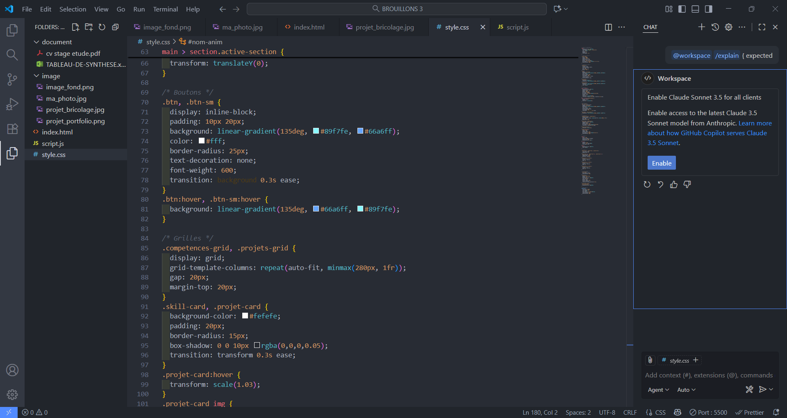
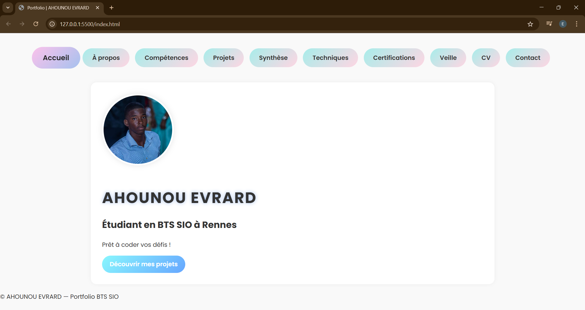

Option SISR (Solutions d'Infrastructure, Systèmes et Réseaux) — MY DIGITALSCHOOL RENNES.
À propos de moi
Je m'appelle Ahounou Evrard, étudiant en BTS Services Informatiques aux Organisations (option SISR). Je me forme à l'administration des réseaux, à la virtualisation, à la cybersécurité et à la gestion d'infrastructures. J'aime apprendre en pratiquant et je construis progressivement mes compétences à travers des projets concrets.
Mon objectif est de devenir un professionnel compétent et polyvalent dans le domaine de l'informatique, capable de gérer des systèmes complexes et de contribuer à la transformation numérique des organisations.
Ce que je fais
Réseaux & Infrastructure
Administration réseaux, gestion DNS et mise en œuvre d'infrastructures avec Cisco Packet Tracer.
Cybersécurité
Sensibilisation aux menaces, bonnes pratiques de sécurité des systèmes et suivi CVE / ANSSI.
Systèmes & Web
Gestion de services informatiques, développement HTML/CSS/JS/PHP et déploiement de sites.
Compétences
Projets Phares




Tableau de synthèse
| Compétences mises en œuvre | Réalisation professionnelle | Période | Contexte de réalisation | ||
|---|---|---|---|---|---|
| Formation | Stage 1ʳᵉ année | Stage 2ᵉ année | |||
| Réalisations en cours de formation | |||||
|
Gérer le patrimoine informatique
|
Sauvegarde, restauration, continuité de service 🔗 Présentation |
20/11/2025 | ✔ | ||
|
Répondre aux incidents et demandes
|
Diagnostic et correction des problèmes lors de la migration | 20/11/2025 | ✔ | ||
|
Développer la présence en ligne
|
Évolution du site, paramétrage Création d'un formulaire d'inscription HTML/CSS/JS/PHP 🔗 Présentation |
20/11/2025 – 04/12/2025 |
✔ | ||
|
Travailler en mode projet
|
Planification des étapes, répartition des rôles | 20/11/2025 | ✔ | ||
|
Mettre à disposition un service informatique
|
Déploiement du site, tests, mise en production Formulaire d'inscription (déploiement) 🔗 Présentation |
20/11/2025 – 04/12/2025 |
✔ | ||
|
Organiser son développement professionnel
|
Création et suivi du portfolio, veille technologique, certifications Cisco | 2025 | ✔ | ||
| Réalisations en milieu professionnel — 1ʳᵉ année | |||||
| À compléter lors du stage de première année | |||||
| Réalisations en milieu professionnel — 2ᵉ année | |||||
| À compléter lors du stage de deuxième année | |||||
Veille technologique
Suivi des nouvelles menaces, vulnérabilités CVE, et bonnes pratiques en sécurité des systèmes et réseaux. Sources : ANSSI, CERT-FR.
Veille sur les évolutions cloud (AWS, Azure, OVH), la virtualisation (VMware, Proxmox) et les architectures modernes.
Actualités sur les standards réseaux, protocoles (IPv6, BGP, SD-WAN) et les certifications Cisco NetAcad.
Suivi des nouvelles pratiques DevOps, de l'automatisation (Ansible, scripts Bash) et des outils de monitoring.
Certifications
Curriculum Vitae
Retrouvez l'intégralité de mon parcours, mes expériences et mes compétences dans mon CV.
📄 Télécharger mon CV (PDF)Contact
Remerciements
Je tiens à exprimer ma profonde gratitude à toutes les personnes qui ont contribué à la réalisation de ce portfolio.
Un merci tout particulier à mes enseignants et mentors pour leur soutien et leurs conseils précieux tout au long de mon parcours en BTS SIO option SISR. Leur expertise et leur encouragement m'ont permis de développer mes compétences et de mener à bien mes projets.
Je remercie également mes camarades de classe pour leur collaboration et leur esprit d'équipe, qui ont enrichi cette expérience d'apprentissage.
Enfin, je suis reconnaissant envers ma famille et mes amis pour leur soutien inconditionnel.
Ce portfolio est le reflet de l'effort collectif. Merci ✨